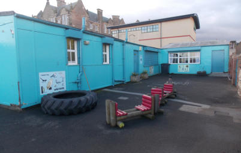

BACK TO THE FUTURE
After a lot of searching, the first Minute Book for Portobello Toddlers Hut, for the years 1930 to 1955, was found in the Museum of Childhood. A group of local ladies had formed a committee to provide a place to play for some of the less fortunate children in the community and the Minutes tell the story of how it was funded. There were probably earlier unrecorded meetings, but the first recorded was held on Tuesday, 7th October 1930 and the Minutes show that " … the Town Council were willing that the open space of ground at the foot of Tower Street [now Figgate Street] should be given for the purposes of a playground with some necessary alterations to the shelter. Some discussion took place with regard to heating and sanitary arrangements and the matter was left over for further investigation." There was only £60 in the bank account, so fund-raising was discussed, such as bridge or whist parties, appeals to local churches and local doctors and their wives who had previously supported the committee.
The ladies decided that the shelter in the playground at the foot of Tower Street was not a suitable place as it lacked sanitary facilities and had no heating. On 2nd December it was stated that: "The Leith Committee had built a Hut for themselves. There was a piece of ground at the foot of Ramsay Lane which the Town Council were willing to give the Committee. The draining and Tar Macadaming would cost £90 and £10 for repairing the wall. It was hoped the Town Council would bear the expense. The cost of the Hut would be about £200. The Committee unanimously agreed that it would be better to go with the building of a hut. The Treasurer was instructed to open a new account at the Bank so that the Hut money would be kept apart from the working expenses." There had been little success with fund-raising. On 20th January 1931: "A letter was read from the Depute Town Clerk stating that the Council would likely include in next year’s estimates for the levelling etc. of the ground at the foot of Ramsay Lane. They were prepared to lease the ground to the Committee for a period of 5 years at a nominal rent of £1 a year. It was left to Mrs Anderson and the Secretary to get information about the Leith Hut from the City Architect and if possible to get a plan." By now fund-raising had been more successful and there was £30 and 8 shillings in the Hut bank account. In July, plans for the Hut were sent to local firms and, in October, Brown & Grieve’s estimate of £260 was accepted for the building, which would be heated by electricity and have a gas ring. It was to be insured for £300. There was now £169 and 6 shillings in the bank account, with £50 still to come. The Hut was opened on Saturday, 14th November by Harriet, Lady Findlay, on "an appallingly wet day".
By 2nd February, 1932, a piano had been bought for £4 and, after paying all the bills, which included buying kettles, chairs, a gas ring and paying the insurance, there was £286 4 shillings and 3 pence in the account. Two months later: "The bills for electric light were considered heavy … It was left to the Secretary to make a business arrangement with parties willing to rent the Hut. The Hut was to be assessed at £9, therefore it could be let". The Girls’ Friendly Society and the Salvation Army rented the Hut, which helped pay the bills. In March 1934, the Police asked if they could use the Hut in the summer as a shelter for lost children and a rental of £22 and 10 shillings was paid for nine weeks use. It was reported in August that the Police scheme had been a great success and that 365 lost children had been helped in July, including 70 lost on one Sunday. This shows how busy Portobello beach was, with children easily losing sight of their families in the crowds. The Police continued to use the Hut for many years.
If you have any memories or photographs of the Toddlers Hut you would like to share, please contact us via the website.
